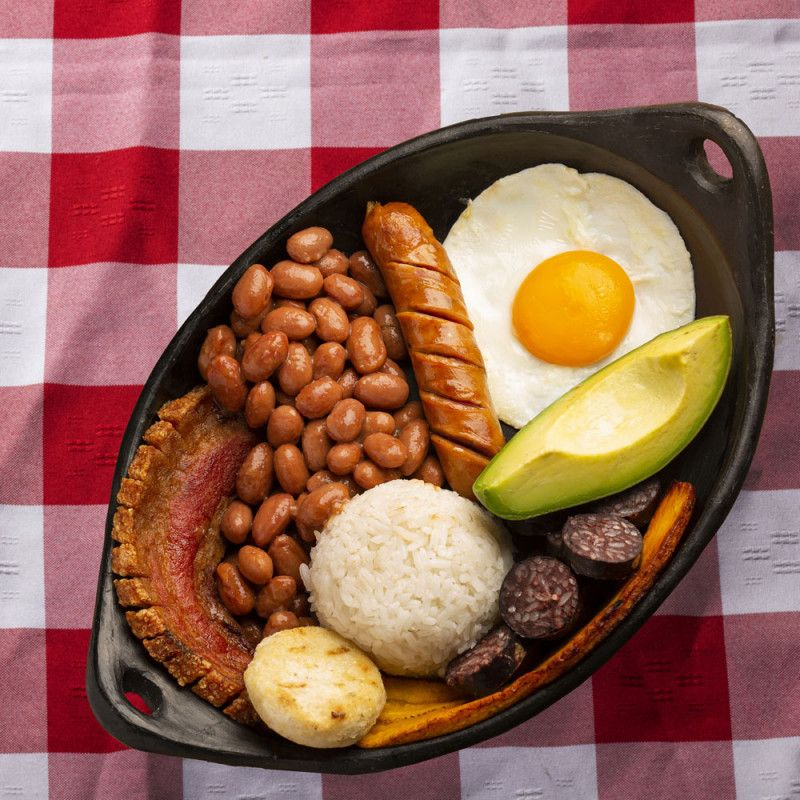
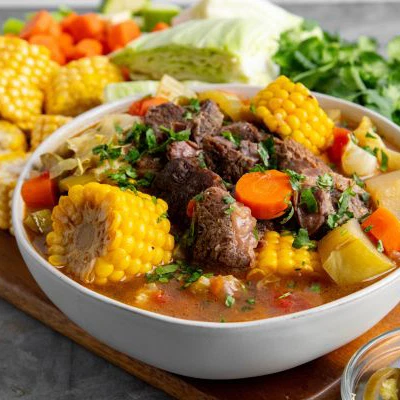
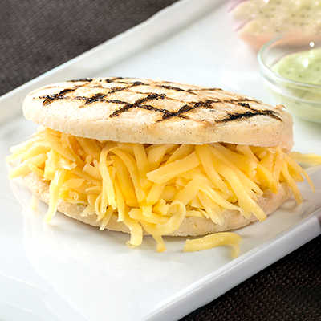
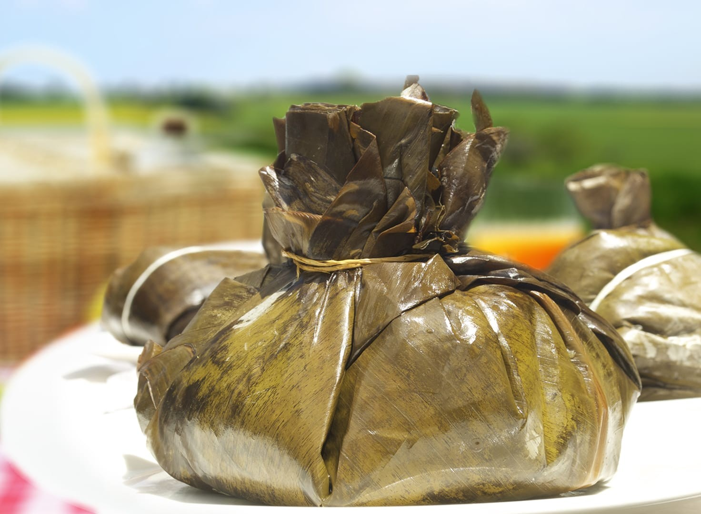
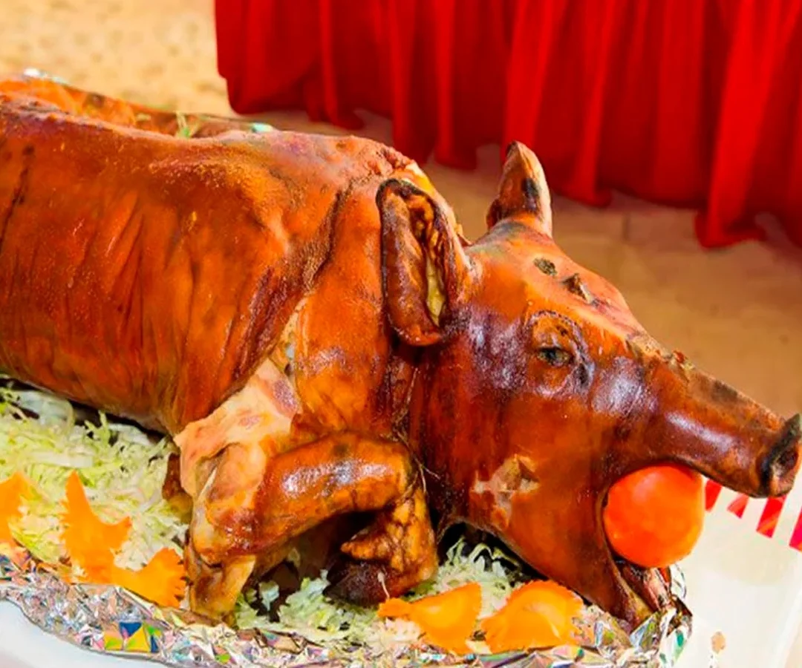

Nuestro Menú

Bandeja paisa
Plato tradicional con frijoles, arroz,carne,huevo,chorizo,aguacate,arepa y tosino

Sancocho
Sopa tipica colombiana con diferentes carnes, uyama, mazorca,papa,cilantro y alinio

Arepa Con Queso
Arepa con queso tradicional colombiana a base de maiz y queso campesino

Tamal Huilense
El tamal una comida tipica del huila especialmente en las fiestas de san juan y san pedro a base de guiso,papa,presa de pollo y carne de cerdo,zanahoria,tocino.Enbuelto en hojas de platano y cocido

Lechona
La lechona es un plato típico tradicional de Colombia, originario de las regiones del Tolima y el Huila, que consiste en un cerdo entero relleno de carne de cerdo, arvejas amarillas, arroz (según la región) y especias, cocinado a fuego lento en horno de barro hasta lograr una piel crujiente

Ajiaco
El ajiaco bogotano o santafereño es una sopa de papas deliciosa que integra: la papa sabanera, papa pastusa y papa criolla, a lo que se le suman la mazorca, las guascas (hierba prehispánica), todos ingredientes nativos